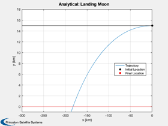
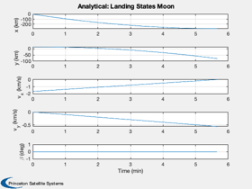
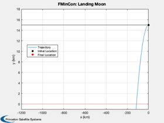
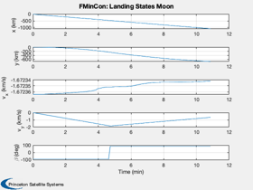

Test fmincon against an analytical solution for the linear tangent law
The test is for a lunar landing in 2D. The surface is assumed flat. The acceleration is constant.
See also: Constant, Simulate2DLanding, LandingCost2D, LandingConst2D
Contents
%-------------------------------------------------------------------------- % Copyright (c) 2021 Princeton Satellite Systems, Inc. % All rights reserved. %-------------------------------------------------------------------------- % Since version 2021.1 %--------------------------------------------------------------------------
Parameters
muMoon = Constant('mu moon'); rMoon = Constant('equatorial radius moon'); d.n = 100; % Number of increments d.g = muMoon/rMoon^2; d.a = 3*d.g; % Engine acceleration h = 15; % Find the thrust direction angles beta = zeros(1,d.n); % We don't want the last beta since the vehicle is on the ground beta = beta(1:end-1); d.n = d.n-1; r = rMoon + h; x = [0;r;sqrt(muMoon/r);0]; tMin = x(3)/d.a; t = linspace(0,tMin,d.n+1); d.h = h; d.u = x(3); % Simulate the landing Simulate2DLanding( t, beta, d, 'Analytical' ); 
Now repeat with fmincon
% fmincon options opts = optimset('Display','iter-detailed',... 'TolFun',1e-4,... 'algorithm','interior-point',... 'TolCon',1e-5,... 'MaxFunEvals',3500); % Pass the initial state to the optimizer d.x = x; % The cost is time, which is a decision variable % The cost is the time to reach the final state vector costFun = @(x) LandingCost2D(x,d); % The numerical integration of the state is in the constraint function constFun = @(x) LandingConst2D(x,d); % The final state vector is [x;0;0;0]; % We don't care what x is since we can always start the descent at the % appropriate time. % First guess for the time decision variable dT = t(2:end) - t(1:end-1); % The decision variables are acceleration angle and time increment u0 = [beta';dT']; % Lower and upper bounds lB = [-(pi/2)*ones(length(dT),1);zeros(length(dT),1)]; uB = [(pi/2)*ones(length(dT),1);100*ones(length(dT),1)]; % Find the optimal decision variables. u = fmincon(costFun,u0,[],[],[],[],lB,uB,constFun,opts);
First-order Norm of
Iter F-count f(x) Feasibility optimality step
0 199 3.434516e+02 1.657e+03 1.212e-06
1 398 2.909333e+02 1.598e+03 9.920e-01 1.037e+01
2 597 3.545084e+02 1.521e+03 1.157e+00 7.586e+00
3 796 3.955306e+02 1.474e+03 1.307e+00 4.443e+00
4 995 4.510892e+02 1.406e+03 1.589e+00 6.062e+00
5 1194 5.211936e+02 1.312e+03 1.992e+00 7.761e+00
6 1393 5.594808e+02 1.260e+03 2.269e+00 4.362e+00
7 1592 5.808764e+02 1.230e+03 2.401e+00 2.615e+00
8 1791 5.871804e+02 1.221e+03 2.256e+00 8.665e-01
9 1990 5.952486e+02 1.207e+03 2.271e+00 1.329e+00
10 2189 6.109752e+02 1.185e+03 2.389e+00 2.711e+00
11 2388 6.219461e+02 1.169e+03 2.481e+00 2.440e+00
12 2587 6.233785e+02 1.167e+03 2.619e+00 1.546e+01
13 2786 6.484953e+02 1.075e+03 7.376e-03 6.018e+00
14 2985 6.486025e+02 1.074e+03 7.557e-03 3.105e-01
15 3184 6.486394e+02 1.074e+03 7.693e-03 8.762e-02
16 3383 6.613633e+02 1.027e+03 3.296e-02 2.992e+00
17 3583 6.613715e+02 1.027e+03 3.294e-02 3.912e-02
Solver stopped prematurely.
fmincon stopped because it exceeded the function evaluation limit,
options.MaxFunctionEvaluations = 3.500000e+03.
Set up the simulation
beta = u(1:d.n)'; dT = u(d.n+1:2*d.n); t = zeros(1,length(dT)); for k = 2:d.n+1 t(k) = t(k-1) + dT(k-1); end % Simulate the landing Simulate2DLanding( t, beta, d, 'FMinCon' ); %-------------------------------------- 